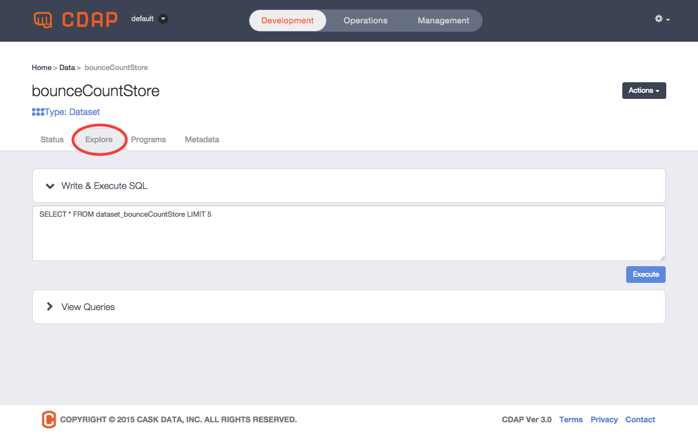

CDAP Tutorial: WISE (Web InSights Engine) Application¶
A Case Study of Web Analytics using the Cask Data Application Platform (CDAP)
Introduction¶
Performing analytics on a Web application using access logs is a common use case when managing a Web site. A system capable of analytics needs to ingest logs, and implement real-time or batch processing computations to process the data. The information has to be stored somewhere in the system, and the system should expose ways to retrieve it. Even in this case where the system performs very simple analytics, such as counting the number of visits made to a website in a day, the components needed to make it possible demand a lot of work.
Using the Web Insights Engine application or WISE, we’ll show you how to build such a system on CDAP that is easy, concise, and powerful. WISE extracts value from Web server access logs, counts visits made by different IP addresses seen in the logs in real time, and computes the bounce ratio of each web page encountered using batch processing.
The WISE v0.4.0 application uses these Cask Data Application Platform (CDAP) constructs to analyze web server logs:
- Stream: Ingests log data in real time
- Flow: Computes web page visits counts per IP address based on the log data in real time
- Datasets: Store web page visits counts and bounce ratio based on custom data access patterns
- MapReduce: Computes the bounce ratio of each web page present in the log data
- Service: Exposes HTTP APIs to query the page visit counts per IP address
- Explore: Runs SQL queries on the data stored in datasets
Conventions¶
In the examples and commands that follow, for brevity we will use these conventions:
$CDAP_SDK_HOMEis the directory that you have installed the CDAP Standalone SDK, either on a UNIX-type system or Windows.The CDAP Command Line Interface (CLI) is included in the SDK in the
bindirectory, either atbin/cdap-cli.shor—on Windows—bin\cdap-cli.bat. In the examples given, substitute the actual path as appropriate. The CLI allows you to quickly access CDAP facilities from a command line environment.If you add the SDK bin directory to your path, you can simplify the commands. From within the CDAP-SDK-home directory, enter:
$ export PATH=${PATH}:`pwd`/binor under Windows:
> setx path "%PATH%;%CD%\bin"
Note that under Windows, you’ll need to create a new command line window in order to see this change to the path variable.
The
curlcommand, common on UNIX-type systems, is included in a Windows-version in the CDAP SDK in thelibexec\bindirectory ascurl.exe.Other scripts referenced below are included either in the SDK or downloaded zips as
.batversions for Windows. Substitute these versions as appropriate in the examples below.
Running WISE¶
Building and running WISE v0.4.0 is straightforward. We’ll assume that you have already downloaded, installed, and have started an instance of CDAP, as described in the CDAP Software Development Kit (SDK).
Change to the directory where you have installed the CDAP SDK Standalone, and download the WISE source code:
$ cd $CDAP_SDK_HOME/examples
$ curl https://codeload.github.com/caskdata/cdap-apps/zip/release/cdap-3.3-compatible --output cdap-apps-release-cdap-3.3-compatible.zip
Unzip the directory and build the application (without running the self-test) by executing:
$ unzip cdap-apps-release-cdap-3.3-compatible.zip
$ cd cdap-apps-release-cdap-3.3-compatible/Wise
$ mvn clean package -DskipTests
To build and run the WISE Example Tests, you can use:
$ mvn clean package
To deploy and start the application, make sure CDAP is running and then execute:
$ cd $CDAP_SDK_HOME
$ cdap-cli.sh deploy app examples/cdap-apps-release-cdap-3.3-compatible/Wise/target/cdap-wise-0.4.0.jar
$ cdap-cli.sh start flow Wise.WiseFlow
$ cdap-cli.sh start service Wise.WiseService
You should get responses similar to:
Successfully connected CDAP instance at http://localhost:10000
Successfully started flow 'WiseFlow' of application 'Wise' with stored runtime arguments '{}'
...
Successfully started service 'WiseService' of application 'Wise' with stored runtime arguments '{}'
Overview of WISE¶
Throughout this case study, we will present and explain the different constructs that the WISE application uses. Let’s first have a look at a diagram showing an overview of the WISE application’s architecture:

- The WISE application has one stream,
logEventStream, which receives Web server access logs. It sends the events it receives to two CDAP components: the flowWiseFlowand the workflowWiseWorkflow. WiseFlowhas two flowlets. The first,parser, extracts information from the logs received from the stream. It then sends the information to the second flowlet,pageViewCount, whose role is to store the information in a custom-defined dataset,pageViewStore.WiseWorkflowexecutes a MapReduce every ten minutes. The input of this job are events from the stream which have not yet been processed by the workflow. For each web page recorded in the access logs, the MapReduce counts the number of times people have “bounced” from it. A “bounce” is counted whenever a user’s activity stops for a specified amount of time. The last page they visited is counted as a bounce. This information is stored in the datasetbounceCountStore.- The WISE application contains the
WiseService, a service which exposes RESTful endpoints to query thepageViewStoredataset. - Finally, both the
pageViewStoreandbounceCountStoredatasets expose a SQL interface. They can be queried using SQL queries through our Explore module in the CDAP UI.
Now let’s talk about each of these components in more detail.
WISE Data Patterns¶
Here’s a sample access log (reformatted to fit):
255.255.255.185 - - [23/Sep/2014:11:45:38 -0400] "GET /cdap.html HTTP/1.0" 401 2969 " "
"Mozilla/4.0 (compatible; MSIE 7.0; Windows NT 5.1)"
WISE is only interested in three parts of a log:
- The IP address: 255.255.255.185
- The time the log was saved: 23/Sep/2014:11:45:38 -0400
- The web page visited: /cdap.html
WISE has two datasets, pageViewStore and bounceCountStore, which both store information about the access logs, but according to different patterns.
The pageViewStore Dataset
The pageViewStore custom dataset stores, for each IP address, the number of times that address has visited a web page. For example, pageViewStore could contain this entry:
255.255.255.185 -> {
/index.html -> 3,
/career.html -> 1,
/cdap.html -> 3,
/team.html -> 4,
...
}
pageViewStore uses a Table object to store this information. Table is a class provided by
the CDAP system which has rows and columns. A row consists of a row key and one or more
columns with values associated with them. Two rows can have different sets of columns.
Using the Java Map interface, a Table can be seen as being of type Map<byte[], Map<byte[],
byte[]>>.
pageViewStore uses a Table object with this pattern:
- The row key of the Table is an IP address;
- Each web page visited by the IP address is a column;
- The value of each column is the count of visits the IP address has made to the web page URI.
pageViewStore is a custom dataset. It is defined in the PageViewStore class such
that it includes the use of a Table to store the data:
public class PageViewStore extends AbstractDataset
implements RecordScannable<KeyValue<String, Map<String, Long>>> {
// Define the underlying table
private Table table;
public PageViewStore(DatasetSpecification spec, @EmbeddedDataset("tracks") Table table) {
super(spec.getName(), table);
this.table = table;
}
This is the common way of defining a custom dataset. The next step is to define the API that this dataset exposes to store and access data. The API for storing data will be a single method:
public void incrementCount(LogInfo logInfo) {
table.increment(new Increment(logInfo.getIp(), logInfo.getUri(), 1L));
}
incrememtCount() takes a LogInfo object, which contains those three parts of a log that we
are interested in—IP address, timestamp, and web page—and increments the number of
visits of the web page for that IP address. We use the underlying Table‘s increment()
method to store this information.
Let’s look at how to make the data available through our pageViewStore dataset:
public long getCounts(String ipAddress) {
Row row = this.table.get(new Get(ipAddress));
if (row.isEmpty()) {
return 0;
}
int count = 0;
for (Map.Entry<byte[], byte[]> entry : row.getColumns().entrySet()) {
count += Bytes.toLong(entry.getValue());
}
return count;
}
This method returns the total number of visits an IP address has made. To do so, it uses
the Table.get() method, which returns a Row object containing all the columns associated
to the row key passed as argument of Table.get().
The bounceCountStore Dataset
The bounceCountStore dataset stores the total number of visits for each web page, along with the number of times users bounced off of them.
Data is stored in a Table object with the pattern:
- The row key is the web page URI;
- Each row has two columns: the byte arrays COL_VISITS and COL_BOUNCES;
- The COL_VISITS column stores the total number of visits for the web page considered; and
- The COL_BOUNCES column stores the number of times users bounced off the web page.
Let’s detail the API exposed by the bounceCountStore dataset to store this information:
public class BounceCountStore extends AbstractDataset
implements BatchWritable<Void, PageBounce>,
RecordScannable<PageBounce> {
static final String COL_VISITS = "v";
static final String COL_BOUNCES = "b";
// Define the underlying table
private final Table table;
public BounceCountStore(DatasetSpecification spec, @EmbeddedDataset("bounces") Table table) {
super(spec.getName(), table);
this.table = table;
}
/**
* Increment a bounce count entry with the specified number of visits and bounces.
*
* @param uri URI of the Web page
* @param visits number of visits to add to the Web page
* @param bounces number of bounces to add to the Web page
*/
public void increment(String uri, long visits, long bounces) {
table.increment(new Increment(uri, COL_VISITS, visits));
table.increment(new Increment(uri, COL_BOUNCES, bounces));
}
The increment() method adds to a web page the number of “visits” and “bounces”, using the
Table.increment() method to do so.
To retrieve the number of “visits” and “bounces” for a particular web page, we define a
get() method:
public PageBounce get(String uri) {
Row row = table.get(new Get(uri, ImmutableList.of(COL_VISITS, COL_BOUNCES)));
if (row.isEmpty()) {
return new PageBounce(uri, 0, 0);
}
long visits = row.getLong(COL_VISITS, 0);
long bounces = row.getLong(COL_BOUNCES, 0);
return new PageBounce(uri, visits, bounces);
}
The get() method reads the two columns COL_VISITS and COL_BOUNCES of a web page. Once
again, we use the Table.get() method which returns a Row object. From the information
contained in the Row object, we build a PageBounce object, a simple POJO class, containing
a uri, a visits count and a bounces count.
Ingesting Access Logs in WISE¶
CDAP has an easy way to ingest data in real time into an application, using streams. A stream exposes a simple RESTful API to ingest data events.
In WISE, each Web server access log is injected as a stream event to the logEventStream in this format (broken on two lines to fit):
47.41.156.173 - - [18/Sep/2014:12:52:52 -0400] "POST /index.html HTTP/1.1" 404 1490 " "
"Mozilla/2.0 (compatible; Ask Jeeves)"
We have already prepared a sample of Web server access logs for you to inject into the logEventStream. Run this command from the CDAP Standalone home directory:
$ cd $CDAP_SDK_HOME
$ cdap-cli.sh load stream logEventStream examples/cdap-apps-release-cdap-3.3-compatible/Wise/resources/apache.accesslog text/plain
This requires that a Standalone CDAP instance be running with the WISE application already deployed.
Real-Time Log Analytics with WiseFlow¶
The goal of WiseFlow is to perform real-time analytics on the Web server access logs
received by logEventStream. For each IP address in the logs, WiseFlow counts the
number of visits they made to different web pages.
This work is realized by two flowlets, parser and pageViewCount.
The parser Flowlet
The parser flowlet (of type LogEventParserFlowlet) receives the raw log data from
the stream and extracts useful information from it. Here is its implementation:
public static class LogEventParserFlowlet extends AbstractFlowlet {
private static final Logger LOG = LoggerFactory.getLogger(LogEventParserFlowlet.class);
// Emitter for emitting a LogInfo instance to the next Flowlet
private OutputEmitter<LogInfo> output;
// Annotation indicates that this method can process incoming data
@ProcessInput
public void processFromStream(StreamEvent event) {
// Get a log event in String format from a StreamEvent instance
String log = Charsets.UTF_8.decode(event.getBody()).toString();
try {
LogInfo logInfo = LogInfo.parse(log);
if (logInfo != null) {
output.emit(logInfo, "ip", logInfo.getIp().hashCode());
}
} catch (IOException e) {
LOG.info("Exception while processing log event {}", log, e);
} catch (ParseException e) {
LOG.info("Could not parse log event {}", log, e);
}
}
}
A Flowlet class extends AbstractFlowlet. The LogEventParserFlowlet class contains one
method to process the data it receives from logEventStream. This method can have any name;
here, we call it processFromStream. It has to bear the @ProcessInput annotation indicating
that the method will be used to process incoming data.
Because the parser flowlet receives data from a stream, the processFromStream method has
to take one and only one argument of type StreamEvent. A StreamEvent object contains the
header and the body of a stream event. In the WISE application, the body of a StreamEvent
will be a Web server access log.
The parser flowlet parses every log it receives into one LogInfo object. Using an
OutputEmitter<LogInfo> object, parser outputs those logs to the next flowlet input—the
pageViewCount flowlet. When a LogInfo object is emitted, it is hashed by IP address. We’ll
see below why this is useful.
The pageViewCount Flowlet
The pageViewCount flowlet (of type PageViewCounterFlowlet) receives LogInfo
objects and updates the pageViewStore dataset with the information they contain.
Its implementation is very brief:
public static class PageViewCounterFlowlet extends AbstractFlowlet {
// UseDataSet annotation indicates the page-views Dataset is used in the Flowlet
@UseDataSet("pageViewStore")
private PageViewStore pageViewStore;
// Batch annotation indicates processing a batch of data objects to increase throughput
// HashPartition annotation indicates using hash partition to distribute data in multiple Flowlet instances
// ProcessInput annotation indicates that this method can process incoming data
@Batch(10)
@HashPartition("ip")
@ProcessInput
public void count(LogInfo logInfo) {
// Increment the count of a logInfo by 1
pageViewStore.incrementCount(logInfo);
}
}
Here’s what to note about the PageViewCounterFlowlet flowlet class:
- The
@ProcessInputannotation on thecount()method indicates thatcount()will process incoming data. - The
@UseDataSetannotation gives a reference to the pageViewStore dataset above the pageViewStore attribute. The dataset APIs can then be used inside thecount()method to store logs analytics. - The
@Batchannotation indicates that data is processed in batches of tenLogInfoobjects, which increases the throughput of the flowlet. - The
@HashPartitionannotation ensures, in the case that several instances of this flowlet are running, allLogInfoobjects with the same IP address information will be sent to the same flowlet instance. This prevents two flowlet instances from writing to the same row key of the pageViewStore dataset at the same time, which would cause a transaction conflict. (See the CDAP Developers’ Manual: Transaction System for more information about transactions and conflicts.)
Building the WiseFlow¶
Now that we have had a look at the core of the parser and pageViewCount flowlets, let’s see how they are connected together and to the logEventStream.
The flowlets are defined in the WiseFlow flow, which is defined by this small class:
public class WiseFlow extends AbstractFlow {
@Override
public void configure() {
setName("WiseFlow");
setDescription("Wise Flow");
addFlowlet("parser", new LogEventParserFlowlet());
addFlowlet("pageViewCount", new PageViewCounterFlowlet());
connectStream("logEventStream", "parser");
connect("parser", "pageViewCount");
}
In the configure() method of the WiseFlow flow, we define the flowlets, giving them names:
- parser, of type
LogEventParserFlowlet; and - pageViewCount, of type
PageViewCounterFlowlet.
We also define the graph of their connections:
- logEventStream stream is connected to the parser flowlet; and
- parser flowlet is connected to the pageViewCount flowlet.
Here is how WiseFlow looks in the CDAP UI:

Batch Processing with WiseWorkflow¶
WISE executes every ten minutes a MapReduce program that computes the bounce counts of the web pages seen in the Web server access logs.
The BounceCountsMapReduce class defines the MapReduce to run. It extends
AbstractMapReduce and overrides the two methods configure() and beforeSubmit().
The configure() method is defined as:
public class BounceCountsMapReduce extends AbstractMapReduce {
@Override
public void configure() {
setName("BounceCountsMapReduce");
setDescription("Bounce Counts MapReduce Program");
}
. . .
It sets the ID (name) of the MapReduce program as BounceCountsMapReduce, and specifies any datasets that will be used in the program.
Plugging a Stream to the Input of the MapReduce¶
Traditionally in a MapReduce program, a Job configuration is set before each run. This is
done in the beforeSubmit() method of the BounceCountsMapReduce class:
@Override
public void beforeSubmit(MapReduceContext context) throws Exception {
context.addOutput("bounceCountStore");
// Retrieve Hadoop Job
Job job = context.getHadoopJob();
job.setMapOutputKeyClass(LogInfo.class);
// We only set IntWritable here to put something, but we are not interested
// in the map output value class
job.setMapOutputValueClass(IntWritable.class);
// Those have to match what the bounceCountsStore Dataset accepts as part of
// the implementation of the BatchWritable interface
job.setOutputKeyClass(Void.class);
job.setOutputValueClass(PageBounce.class);
job.setMapperClass(BounceCountsMapper.class);
job.setReducerClass(BounceCountsReducer.class);
job.setPartitionerClass(NaturalKeyPartitioner.class);
job.setSortComparatorClass(CompositeKeyComparator.class);
final long endTime = context.getLogicalStartTime();
final long startTime = endTime - TimeUnit.MINUTES.toMillis(10);
// Use the logEventStream as the input of the mapper. We only read the data that has
// not been read by previous runs
// This statement forces our Mapper to have as input LongWritable/Text
StreamBatchReadable.useStreamInput(context, "logEventStream", startTime, endTime);
}
As mentioned earlier, the input of the MapReduce is the logEventStream. This
connection is made above using the StreamBatchReadable.useStreamInput() method.
This MapReduce program runs as part of a workflow that is scheduled every ten minutes. Every time it runs, it reads ten minutes’ worth of events from the stream, ending at the logical start time of the job (the same as the scheduled time of the containing workflow).
Writing to the bounceCountStore dataset from the MapReduce¶
In the BounceCountsMapReduce.configure() method seen earlier, the setOutputDataset
method sets the bounceCountsStore dataset as the output of the job.
It means that the key/value pairs output by the reducer of the MapReduce will be directly
written to that dataset.
To allow that, the bounceCountsStore dataset has to implement the BatchWritable
interface:
public class BounceCountStore extends AbstractDataset
implements BatchWritable<Void, PageBounce>,
RecordScannable<PageBounce> {
. . .
. . .
@Override
public void write(Void ignored, PageBounce pageBounce) {
this.increment(pageBounce.getUri(), pageBounce.getTotalVisits(), pageBounce.getBounces());
}
This BatchWritable interface, defining a write() method, is intended to allow datasets to
be the output of MapReduce programs. The two generic types that it takes as parameters must
match the types of the key and value that the Reduce part of the MapReduce outputs. In this
case, the bounceCountStore dataset can be used as output of a MapReduce where the
output key is of type Void, and the output value is of type PageBounce.
MapReduce Structure¶
The Mapper of the MapReduce program receives log events as input, parses them into
LogInfo objects and sends them to the Reducer. The Reducer receives the LogInfo
objects grouped by IP addresses, with two logs with the same IP address sorted by
timestamp in ascending order.
Because the input of our MapReduce is a stream, it forces the key and value types of our
Mapper to be LongWritable and Text, respectively.
Our Mapper and Reducer are standard Hadoop classes with these signatures:
. . .
public static class BounceCountsMapper extends Mapper<LongWritable, Text, LogInfo, IntWritable> {
. . .
. . .
public static class BounceCountsReducer extends Reducer<LogInfo, IntWritable, Void, PageBounce> {
. . .
Each generic parameter of the Mapper and the Reducer contains:
- Mapper input key
LongWritable: the timestamp of when a stream event has been received; - Mapper input value
Text: body of a stream event, in this case the log data; - Mapper output key and Reducer input key
LogInfo: a POJO object containing information about one log line; - Mapper output value and Reducer input value
IntWritable: a simple placeholder as we don’t use its content; - Reducer output key
Void: this is not used; and - Reducer output value
PageBounce: bounce counts of a web page.
Scheduling the MapReduce¶
To schedule the BounceCountsMapReduce to run every ten minutes, we define it in the
WiseWorkflow using its name:
/**
* Implements a simple Workflow with one Workflow action to run the BounceCountsMapReduce
* program with a schedule that runs every 10 minutes.
*/
public class WiseWorkflow extends AbstractWorkflow {
@Override
public void configure() {
setName("WiseWorkflow");
setDescription("Wise Workflow");
addMapReduce("BounceCountsMapReduce");
}
}
The WiseWorkflow can then be scheduled in the WiseApp:
. . .
// Schedule the Workflow to run the MapReduce program every ten minutes
scheduleWorkflow(Schedules.builder("TenMinuteSchedule")
.setDescription("Run every 10 minutes")
.createTimeSchedule("0/10 * * * *"),
"WiseWorkflow");
. . .
Accessing Data through WiseService¶
WiseService is a WISE component that exposes specific HTTP endpoints to retrieve the
content of the pageViewStore dataset. For example, WiseService defines this endpoint:
GET <base-url>/v3/namespaces/default/apps/Wise/services/WiseService/methods/ip/<ip-address>/count
Using the curl command and the CLI, example use of the service would be:
$ curl -w'\n' -X GET http://localhost:10000/v3/namespaces/default/apps/Wise/services/WiseService/methods/ip/255.255.255.185/count
21
$ cdap-cli.sh call service Wise.WiseService GET ip/255.255.255.185/count
+=======================================================================================================================+
| status | headers | body size | body |
+=======================================================================================================================+
| 200 | Content-Length : 2 | 2 | 21 |
| | Connection : keep-alive | | |
| | Content-Type : application/ | | |
| | json | | |
+=======================================================================================================================+
This endpoint is defined in a class extending AbstractHttpServiceHandler:
public static class PageViewCountHandler extends AbstractHttpServiceHandler {
private static final Logger LOG = LoggerFactory.getLogger(PageViewCountHandler.class);
// Annotation indicates that the pageViewStore custom DataSet is used in the Service
@UseDataSet("pageViewStore")
private PageViewStore pageViewStore;
/**
* Queries the total number of visited pages viewed from a specified IP address. It expects GET request to
* a URL Of the form:
*
* <pre>{@code
*
* GET http://[host]:[port]/v3/namespaces/default/apps/Wise/services/WiseService/methods/ip/[ip]/count
* }</pre>
*/
@GET
@Path("/ip/{ip}/count")
public void getIPCount(HttpServiceRequest request, HttpServiceResponder responder,
@PathParam("ip") String ipAddress) {
long counts = pageViewStore.getCounts(ipAddress);
responder.sendJson(200, counts);
}
The PageViewCountHandler class accesses the pageViewStore dataset using the same
@UseDataSet annotation used in the PageViewCounterFlowlet class.
The endpoint defined above in the getIPCount() method will retrieve the number of times a
given IP address has been seen in the access logs by using the APIs of the pageViewStore
dataset.
The @GET annotation specifies the HTTP method used to reach the endpoint. The @Path
annotation defines the URL path used to reach this endpoint. This path has a single user
parameter: {ip}. It is decoded as a String in the parameters of the getIPCount()
method with the help of the @PathParam annotation.
class WiseService extends AbstractService {
@Override
protected void configure() {
setName("WiseService");
addHandler(new PageViewCountHandler());
}
- The class sets the ID of the service, and this ID will be used in the URL to reach the endpoints defined by the service.
- The
PageViewCountHandlerthat responds to the HTTP endpoint exposed by the service is specified by theaddHandler()method.
You can use a curl command to make calls to the service URL. For example, to query total pageview count
from IP 255.255.255.207:
$ curl -w'\n' -X GET http://localhost:10000/v3/namespaces/default/apps/Wise/services/WiseService/methods/ip/255.255.255.207/count
22
The PageViewCountHandler has another endpoint for retrieving the pageview count of a particular page from
a specific IP address. For example, to query the pageview count of page /index.html from IP 255.255.255.154:
$ curl -w'\n' -X GET -d /index.html http://localhost:10000/v3/namespaces/default/apps/Wise/services/WiseService/methods/ip/255.255.255.154/count
21
Exploring Datasets through SQL¶
With WISE, you can explore the datasets using SQL queries. The SQL interface on CDAP, called Explore, can be accessed through the CDAP UI:
After deploying WISE in your Standalone CDAP instance, go to the WISE overview page:

Click on the Datasets tab to display the list of datasets used by WISE:

Click on bouncecountstore, and then the Explore tab:

{kind=link}
This is the Explore tab, where you can run ad-hoc SQL queries and see information about the datasets that expose a SQL interface.
You will notice that the datasets have names such as dataset_bouncecountstore. Those are the SQL table names of the datasets which have a SQL interface.
Here are some of the SQL queries that you can run:
Retrieve the web pages from which IP addresses have bounced more than 10% of the time:
SELECT uri FROM dataset_bouncecountstore WHERE bounces > 0.1 * totalvisitsRetrieve all the IP addresses which visited the page ‘/contact.html’:
SELECT key FROM dataset_pageviewstore WHERE array_contains(map_keys(value),'/contact.html')=TRUE
As the SQL engine that CDAP runs internally is Hive, the SQL language used to submit queries is HiveQL. A description of it is in the Hive language manual.
Let’s take a look at the schemas of the bounceCountStore dataset. The Explore interface
shows that it has three columns: uri, totalvisits, and bounces.
To understand how we managed to attach this schema to the bounceCountStore dataset, let’s have another look at the dataset’s class definition:
public class BounceCountStore extends AbstractDataset
implements BatchWritable<Void, PageBounce>,
RecordScannable<PageBounce> {
. . .
The RecordScannable interface allows a dataset to be queried using SQL. It exposes a
dataset as a table of Record objects, and the schema of the Record defines the schema of
the dataset as seen as a SQL table.
The bounceCountStore dataset’s Record type is PageBounce, which is a POJO object
containing three attributes: uri, totalVisits, and bounces. It explains where the schema
of the bounceCountStore is derived.
Bringing the Components Together¶
To create the WISE application with all these components mentioned above, define a class
that extends AbstractApplication:
public class WiseApp extends AbstractApplication {
@Override
public void configure() {
setName("Wise");
setDescription("Web Insights Engine");
// The logEventStream stream will receive the access logs
addStream(new Stream("logEventStream"));
// Custom Dataset to store basic page view information by IP address
createDataset("pageViewStore", PageViewStore.class);
// Custom Dataset to store bounce information for every web page
createDataset("bounceCountStore", BounceCountStore.class);
// Add the WiseFlow flow
addFlow(new WiseFlow());
// Add MapReduce that computes the bounce counts of visited pages
addMapReduce(new BounceCountsMapReduce());
// Add the WiseWorkflow workflow
addWorkflow(new WiseWorkflow());
// Add the WiseService service
addService(new WiseService());
// Schedule the Workflow to run the MapReduce program every ten minutes
scheduleWorkflow(Schedules.builder("TenMinuteSchedule")
.setDescription("Run every 10 minutes")
.createTimeSchedule("0/10 * * * *"),
"WiseWorkflow");
}
}
When the WISE application is deployed in CDAP, this class is read by the CDAP system. All the components it defines are then installed, and can reference one another.
Unit Testing WISE¶
Unit tests are a major part of the development of an application. As developers ourselves, we have created a full unit testing framework for CDAP applications. In a CDAP application unit tests, all CDAP components run in-memory.
The WiseAppTest class, which extends the unit-testing framework’s TestBase, tests all the
components of the WiseApp. The first step is to obtain an ApplicationManager object:
ApplicationManager appManager = deployApplication(WiseApp.class);
With this object, we can:
Test log event injection:
. . . // Define a StreamManager to send Apache log events in String format to the App StreamManager streamWriter = getStreamManager("logEventStream"); streamWriter.send("1.202.218.8 - - [12/Apr/2012:02:03:43 -0400] " + "\"GET /product.html HTTP/1.0\" 404 208 \"http://www.example.org\" \"Mozilla/5.0\""); . . .
Test the call to a service endpoint:
. . . ServiceManager serviceManager = appManager.getServiceManager("WiseService").start(); serviceManager.waitForStatus(true); URL url = new URL(serviceManager.getServiceURL(), "ip/1.202.218.8/count"); HttpRequest request = HttpRequest.get(url).build(); HttpResponse response = HttpRequests.execute(request); Assert.assertEquals(200, response.getResponseCode()); Assert.assertEquals("3", Bytes.toString(response.getResponseBody())); url = new URL(serviceManager.getServiceURL(), "ip/1.202.218.8/count"); request = HttpRequest.post(url).withBody("/career.html").build(); response = HttpRequests.execute(request); Assert.assertEquals(200, response.getResponseCode()); Assert.assertEquals("1", Bytes.toString(response.getResponseBody())); . . .
Start a MapReduce:
. . . // Test the MapReduce program MapReduceManager mrManager = appManager.getMapReduceManager("BounceCountsMapReduce").start(); mrManager.waitForFinish(3, TimeUnit.MINUTES); . . .
Test the output of the MapReduce:
. . . // Check the data outputted from the MapReduce program DataSetManager<BounceCountStore> dsManager = getDataset("bounceCountStore"); BounceCountStore bounceCountStore = dsManager.get(); Assert.assertEquals(new PageBounce("/product.html", 3, 2), bounceCountStore.get("/product.html")); Assert.assertEquals(new PageBounce("/career.html", 2, 1), bounceCountStore.get("/career.html")); . . .
Test a SQL query on datasets:
. . . // Perform a SQL query on the bounceCounts dataset to retrieve the same results Connection exploreConnection = getQueryClient(); ResultSet resultSet = exploreConnection.prepareStatement("SELECT * FROM dataset_bouncecountstore ORDER BY uri").executeQuery(); Assert.assertTrue(resultSet.next()); Assert.assertEquals("/career.html", resultSet.getString(1)); Assert.assertEquals(2L, resultSet.getLong(2)); Assert.assertEquals(1L, resultSet.getLong(3)); Assert.assertTrue(resultSet.next()); Assert.assertEquals("/product.html", resultSet.getString(1)); Assert.assertEquals(3L, resultSet.getLong(2)); Assert.assertEquals(2L, resultSet.getLong(3)); . . .
A complete example of the test is included in the downloaded ZIP file.
Next Up¶
Follow up this tutorial with the our other training resources, available at CDAP Examples, Guides and Tutorials.